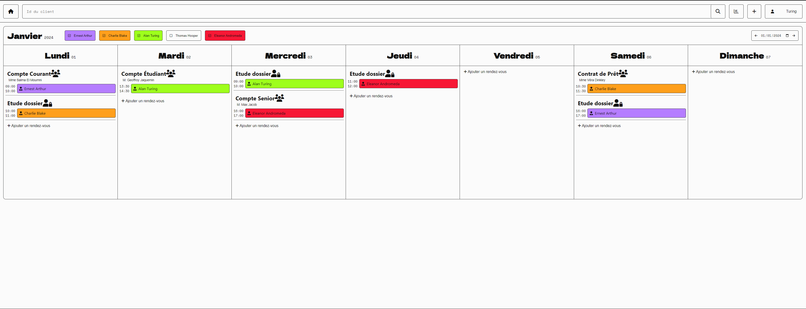
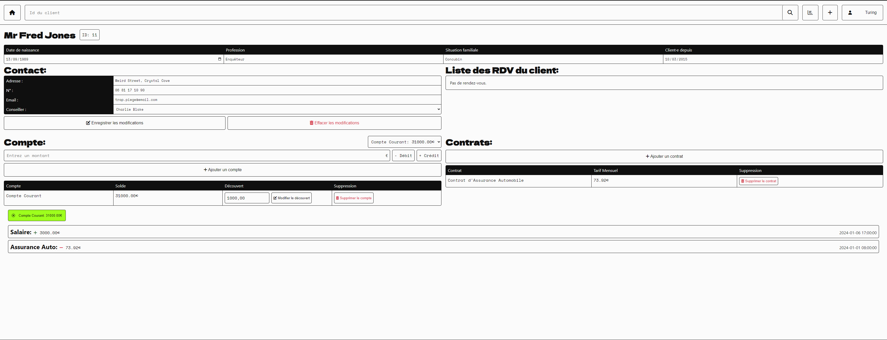

Sprint
Dépôt githubDécembre 2024 - Projet universitaire (20/20) - HTML, PHP, SQL, JS, Git
Le sprint est un projet universitaire durant le premier semestre de L2, qui consiste à crée un site web pour une agence bancaire pour la gestion des comptes, contrat, RDV. J'ai réalisé ce projet avec Nathan Rissot et Agathe Papineau.
Pour ce projet, nous avons commencer par concevoir la base de donnée en réalisant le MCD et le MLDR à l'aide de win-design un logiciel installé dans l'université qui nous à permit de générer facilement les commandes SQL pour crée les différentes table.
Ensuite, nous devions réaliser le projet en respectant le modèle MVC (Modèle/Vue/Contrôleur), je me suis occuper de la partie contrôleur, cette partie m'a permit de renforcer mes connaissances en PHP, je réalisait également un début de page web simple qui était retravailler par Nathan qui s'occupais du design du site, j'ai également aider Agathe dans la partie du modèle avec les interactions avec la base de donnée.
 